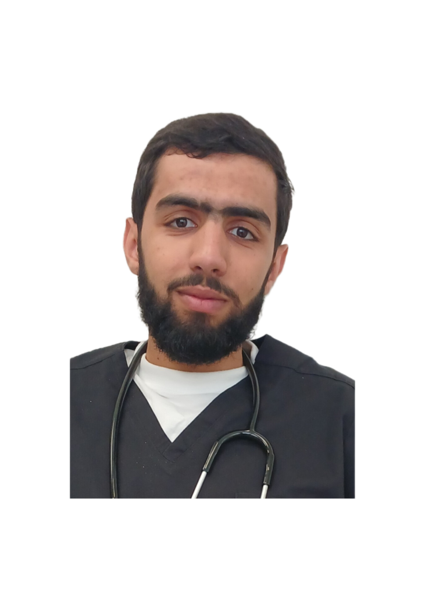

Bonjour, je suis Yassine Dahbi
Technicien en Maintenance et Génie Biomédical
Optimiser la performance et la sécurité des équipements médicaux pour garantir la qualité des soins.
Diplômé de l'ESM6ISS (UM6SS), je suis à la recherche d'un poste me permettant de mettre en pratique mes compétences et de contribuer activement à la sécurité et à la performance des équipements médicaux.
À propos de moi
Passionné par la technologie et le domaine de la santé, je suis un technicien en génie biomédical rigoureux et proactif. Fort d’une solide formation et de plusieurs expériences de stages enrichissantes, j’ai développé une expertise dans la maintenance préventive et corrective des équipements médicaux, la gestion de la qualité et la sécurité, ainsi que le prototypage de solutions innovantes. Mon objectif est de contribuer à l’amélioration continue des soins en garantissant la fiabilité et la performance des dispositifs médicaux.
Contact
Mes compétences
Compétences Techniques (Savoir-faire)
Maintenance Biomédicale
Diagnostic de pannes, maintenance préventive et corrective, calibration d'équipements (respirateurs, moniteurs, autoclaves, échographes).
Qualité & Sécurité
Gestion des risques en milieu médical, connaissance des normes de sécurité et de qualité, mise en place de protocoles d'entretien.
Électronique & Prototypage
Conception de circuits sur carte Arduino (moniteur ECG, système de mesure).
Logiciels & Outils
Compétences Comportementales (Savoir-être)
Résolution de problèmes
Capacité d'analyse et d'identification rapide des défaillances.
Travail d'équipe & Communication
Collaboration efficace avec le personnel médical, et rédaction de rapports techniques clairs.
Rigueur et Autonomie
Précision dans les interventions, gestion d'inventaire, et proactivité dans la veille technologique.
Expériences Professionnelles
Stage - Projet de Fin d'Études (PFE)
Hôpital Privé International de Casablanca (HPIC)
Avril 2025 – Juillet 2025- Ingénierie et Développement : Conception et mise en œuvre d'outils de test innovants (simulateur ECG, testeur de sécurité) pour la validation et la standardisation des protocoles de maintenance.
- Automatisation et GMAO : Développement d'un système automatisé de gestion des rapports d'intervention via Google Forms & Apps Script, optimisant la traçabilité et l'efficacité du service.
- Maintenance Spécialisée : Réalisation de diagnostics complexes et d'interventions de maintenance curative et préventive sur des équipements d'imagerie et de soins intensifs (scanner, amplificateur de brillance, autoclave, hémodialyse).
- Logistique et Support Technique : Participation active à l'organisation et au déploiement d'une caravane médicale, incluant la gestion, l'installation et la maintenance du parc d'équipements sur le terrain.
- Gestion Administrative : Relation fournisseurs, suivi budgétaire, et planification des maintenances.
Stage Technique
Hôpital Privé International de Casablanca (HPIC)
Juin 2024 – Août 2024- Maintenance et Calibration : Prise en charge de la maintenance, du dépannage et de la calibration d’un large éventail de dispositifs médicaux : pousse-seringues, moniteurs multiparamétriques, respirateurs, autoclaves, scanner (scrim) et irm(Siemens Healthineers).
- Gestion des Équipements : Contribution à l'optimisation de la gestion du parc biomédical par la rédaction de rapports techniques détaillés et la mise à jour rigoureuse de l'inventaire structuré.
- Analyse et Diagnostic : Diagnostic précis de l'état des équipements biomédicaux en réalisant des tests et essais fonctionnels pour identifier les pannes et les besoins de réparation.
- Réparation et Ajustement : Exécution des réglages, des ajustements de précision et du remplacement des composants conformément aux procédures techniques.
Stage d'Observation
CHU Ibn Rochd, Casablanca
Juillet 2023 – Août 2023- Maintenance en Bloc Opératoire : Participation à la maintenance préventive et corrective des équipements d'anesthésie et des tables d'opération, en respectant les conditions de sécurité et de qualité en milieu hospitalier.
- Support aux Utilisateurs : Assistance technique au personnel médical pour la vérification fonctionnelle et la bonne utilisation des dispositifs, assurant ainsi la sécurité des patients.
- Analyse Organisationnelle : Observation et analyse du fonctionnement, de l'organisation et des flux de travail du service biomédical au sein d'une structure hospitalière universitaire de premier plan.
- Maintenance d'autoclave : Service stérilisation.
- Maintenance d'amplificateur de brillance.
- Maintenance sur salle hybride.
Mes Projets

Gestion Automatisée des Rapports de Maintenance
Automatisation des rapports d'intervention via Google Forms & Apps Script.

Testeur ECG
Création d'un prototype pour vérifier le bon fonctionnement des appareils ECG.

Moniteur ECG
Réalisation d'un moniteur ECG fonctionnel pour l'acquisition des signaux cardiaques.

Système de mesure pour poche de perfusion
Développement d'un système pour mesurer et surveiller le niveau de remplissage de poche de perfusion.
_page-0001.webp)
Testeur de sécurité électrique
Création d'un testeur de sécurité électrique pour une maîtrise des coûts.

PROCÉDURE DE MAINTENANCE PRÉVENTIVE RESPIRATEUR RÉANIMATION
Création de protocoles RESPIRATEUR RÉANIMATION servo-air/n/U SANS TESTEUR SPECIFIQUE.

Protocole de Nettoyage Cassette
Création de protocoles détaillés et illustrés pour respirateur de réanimation GETINGE Servo-air/n.

PROCÉDURE DE MAINTENANCE PRÉVENTIVE ET DE CONTRÔLE DE CONSTANCES RESPIRATEUR DE RÉANIMATION
Création de protocoles détaillés et illustrés pour respirateur de réanimation GETINGE Servo-c/air/n/U.

PROCÉDURE DE MAINTENANCE PRÉVENTIVE ET DE CONTRÔLE DE CONSTANCES RESPIRATEUR D'Anesthésie
Création de protocoles détaillés et illustrés pour respirateur d'anesthésie GETINGE Flow-c/i/e.

Guide Calibration Pousse-Seringue
Création de protocoles détaillés et illustrés pour pousse-seringue mindray BeneFusion SP3 .

PROCÉDURE DE MAINTENANCE PRÉVENTIVE ET DE CONTRÔLE DE CONSTANCES du Moniteur multiparamétrique
Création de protocoles détaillés et illustrés pour Moniteur multiparamétrique Nihon Kohden.

PROCÉDURE DE MAINTENANCE PRÉVENTIVE ET DE CONTRÔLE DE CONSTANCES du Pousse-Seringue
Création d'un guide détaillé pour la maintenance pousse-seringue mindray BeneFusion SP3.
Certifications
Formation
Diplôme de Technicien en Maintenance et Génie Biomédical

ESM6ISS (UM6SS)
2022 – 2025Au cours de ma formation, j'ai acquis des compétences approfondies dans les domaines suivants :
Recommandations
"J’ai eu l’occasion de travailler avec Yassine DAHBI au sein de l’équipe de maintenance biomédicale chez CIM Santé. Yassine a toujours fait preuve d’un grand professionnalisme, d’une rigueur exemplaire et d’un excellent esprit d’équipe. Il maîtrise parfaitement la maintenance préventive et corrective des dispositifs médicaux, et sait également diagnostiquer efficacement les pannes électroniques. Sa capacité d’analyse rapide et son engagement à fournir un service de qualité font de lui un atout précieux pour toute organisation du domaine biomédical."

Walid Tahir
Technicien biomédical
28 juin 2025
Compétences validées :

Youssef Zahiri
Technicien maintenance biomédicale
27 juin 2025